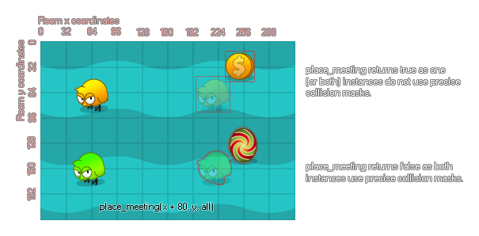

place_meeting(x, y, obj);
| Argument | Description |
|---|---|
| x | The x position to check. |
| y | The y position to check. |
| obj | The instance or object to check for. |
Returns: Boolean
With this function you can check a position for a collision with
another instance or all instances of an object using the collision
mask of the instance that runs the code for the check. When you use
this you are effectively asking GameMaker: Studio to move
the instance to the new position, check for a collision, move back
and tell you if a collision was found or not. This will work for
precise collisions, but only if both the instance and the object
being checked for have precise collision masks selected otherwise
only bounding box collisions are applied. This function also
accepts the special keywords all and other. Please
note that should you need to get the unique instance id of
the object being collided with, you should use
instance_place.

Note that the given x/y coordinates will be floored to the
nearest integer before the check is performed.
if keyboard_check(vk_left)
{
if !place_meeting(x - 5, y, obj_wall) x -=5;
}
The above code checks to see if there is not a collision to the left of the instance and moves the instance if there is none.